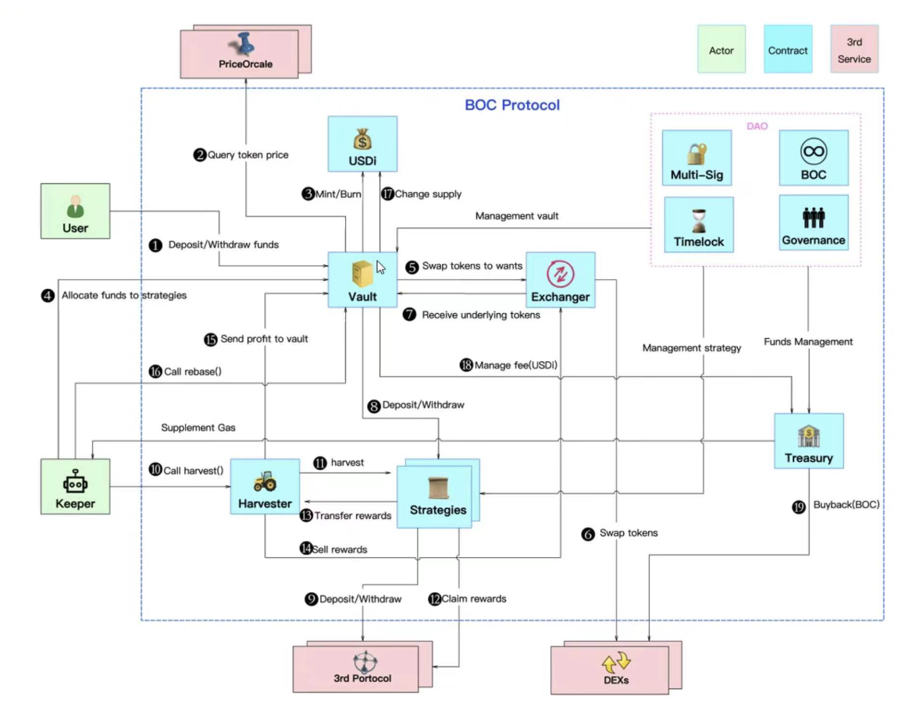
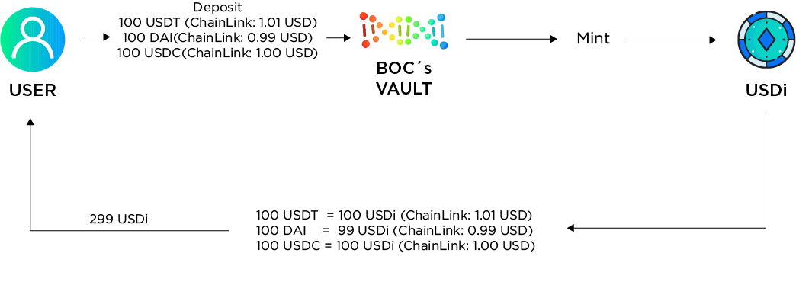
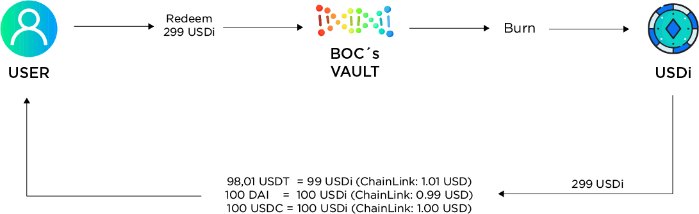

Protocol Algorithm Design
BOC provides the USD Stablecoins Farming and ETH Farming.
USD Stablecoins Farming Mechanism
Process Description

- “Deposit” - The BOC protocol supports users to
depositthe three major stablecoins (USDT, USDC, DAI) in any combination and in any amount, and mint USDi of corresponding value to return to the user.\ “Withdraw” - Users canwithdrawUSDi all the three major stablecoins at any time through the BOC protocol. By default, they will be returned according to the proportion of the three major stablecoins in the Vault at that time, or they can specify a certain currency to be returned. - After Vault receives the stablecoin,
queryTokenPricequeries the price of the user's transfer of the stablecoin through an external oracle. When the price returned by the oracle is higher than 1 USD, it is calculated at 1 USD, and when it is lower than 1 USD, it is calculated at the price of the oracle. - Based on the calculated value,
mint/burnwill mint/burn an equivalent value of USDi. - The Keeper module reaches the trigger condition of
doHardWorkand triggersdoHardWork. - Vault calls the aggregate exchange module
swapTokenToWants. - The aggregated exchange module
swapTokenscompletes the exchange. - Vault receives the target currency exchanged by the aggregate exchange module.
- Vault puts stablecoin
depositsinto the strategy according to the currency required by the strategy. - The strategy invests stablecoin
depositsinto third-party protocols. - The Keeper module reaches the
harvesttrigger condition and triggers theharvest. - Harvester triggers each strategy to execute
harvest. - Each strategy executes
claimRewardsto collect mining. - Each strategy transfers mining coins
transferRewardsto Harvester. - Harvester sells miner
sellRewardsinto stablecoins through aggregated exchange. - Harvester
sendProfitToVaulttransfers stablecoins into Vault. - The Keeper module reaches the
rebasetrigger condition and triggers therebase. - Vault calls
changeTotalSupplyto issue additional USDi. - Vault collects 20% of the yields, which is transferred to the
Treasury. - The treasury will benefit users from using
buybackto repurchase the BOC governance token.
Mint & Burn rules
Here is a numerical example of minting and burning USDi tokens.
Let’s assume that Alice deposits 100 USDT, 100 DAI and 100 USDC.
According to the BOC mint rule: the transaction price is 1 USD when the price from Chainlink is higher than 1 USD, otherwise the transaction price is equal to the price from Chainlink.
Thus, Alice will mint 299 USDi in total:
The current price from Chainlink is:
- 1 USDT = 1.01 USD
- 1 DAI = 0.99 USD
- 1 USDC = 1.00 USD
100 USDT = 100 x 1.00 = 100 USDi (price of Chainlink > 1 USD final price = 1 USD)\ 100 DAI = 100 x 0.99 = 99 USDi (price of Chainlink < 1 USD final price = Chainlink price)\ 100 USDC = 100 x 1.00 = 100 USDi (price of Chainlink = 1 USD final price = 1 USD)

Now, Alice decides to burn the USDi to withdraw her stablecoins. She has 299 USDi now and when she burns depending on the proportion of USDT/USDC/DAI of the Vault the burning smart contract will distribute the same proportion the USDi on each stablecoin, in this case when we redeem there is a little less of USDT on the Vault, so the distribution will be 99 of them for USDT, 100 of them for DAI, and the rest 100 for USDC. Assume the current price from Chainlink does not change.
The rule of burning is opposite to that of minting: the transaction price is 1 USD when the price from Chainlink is less than 1 USD, otherwise the transaction price is equal to the price from Chainlink.
Therefore, Alice burns 299 USDi to withdraw:
Chainlink prices:
- 1 USDT = 1.01 USD
- 1 DAI = 0.99 USD
- 1 USDC = 1.01 USD
100 USDi = 100/1.01 = 99 USDT (price of Chainlink > 1 USD final price = Chainlink price)\ 100 USDi = 100/1.00 = 100 DAI (price of Chainlink < 1 USD final price = 1 USD)\ 100 USDi = 100/1.00 = 100 USDC (price of Chainlink = 1 USD final price = 1 USD)

The numbers in the chart here are only a numerical example for a better understanding of the rules of minting and burning in BOC. In the real world, the fluctuation of USDi is much smaller, which means users will never encounter a possible loss like this. In fact, the possible loss here will be less than 0.01%. The objective of these rules is to avoid arbitrage and protect the protocol's vault.
Harvest
The harvestTrigger is triggered every day to determine whether the harvest condition is met. The two harvest conditions are:
- Maximum time interval is exceeded.
- The harvest rule met:
$$ Profit \times 20\% > harvest cost
$$
If any of the above conditions are met, the strategy can do harvest work:
- Execute the yield transfer Harvester (for the strategy with yield production and reach the yield selling threshold);
- Report the current asset from the strategy.
| Set parameters | ETH | BNB Chain | Polygon |
|---|---|---|---|
| Scheduled task trigger cycle | 6:00 am every day | 6:00 am every day | 6:00 am every day |
| Maximum time interval for triggering strategie “harvest” (if the interval between current “harvest” and last “harvest” is greater than this value, “harvest” must be done) | 2.5 days | 2.5 days | 2.5 days |
| The benefit-cost ratio factor X of the trigger strategy “harvest” (“harvest” profit>=cost*X, then “harvest” can be done.) | 5 | 5 | 5 |
Rebase
When the total assets of the Vault are greater than the total issuance of USDi, it means that new income has been generated. At this time, the value of USDi compared with the US dollar will be revised, and the number of USDi will be increased, so that the total value of USDi is consistent with the total value of Vault assets, ensuring 1 USDi is anchored at 1USD. At the same time, 20% of the additional USDi will be transferred to the DAO treasury as a management fee.
Fund Allocation
doHardWork
The input into the position adjustment of the algorithm are the official APY of the third-party protocol, the gas required for investment of each strategy, the limit of exchange slippage, and the rules of fund allocation, and the strategy and amount of the funds to be invested are the output.
| Set parameters | ETH | BNB Chain | Polygon |
|---|---|---|---|
| Scheduled Task Trigger Cycle | 7 am every Wed. & Sat. | 7 am every Wed. & Sat. | 7 am every Wed. & Sat. |
| Cost-benefit Calculation Period X (If the profit of investment X days >= cost, “doHardwork” can be done) | 365 days | 365 days | 365 days |
Allocation
Compared with doHardWork, allocation has done one more step: take out the funds of the low APY strategy, and then use the official APY of the third-party protocols, the gas required for investment of each strategy, the exchange slippage limit, fund allocation rules, the position adjustment algorithm as an input, and the output is the strategy and the amount of the awaiting investment funds.
| Set parameters | ETH | BNB Chain | Polygon |
|---|---|---|---|
| Pre-adjusted position report trigger timing | 6:50 am every day | 6:50 am every day | 6:50 am every day |
| Scheduled task trigger cycle | 7 am every Monday | 7 am every Monday | 7 am every Monday |
| Cost-benefit calculation period X (If the profit of rebalancing X days >= cost, “allocation” can be done) | 30 days | 30 days | 30 days |
Fund allocation Algorithm
| Variable | Meaning |
|---|---|
| "durationDays" | The cycle of rebalancing needs to ensure that in a cycle after rebalancing, the profit after rebalancing - the profit before rebalancing - the cost of rebalancing > 0 |
| "yearDays" | 365days |
| "asset1" | The original assets of the strategy |
| "apr1" | The strategy apr before the position adjustment (APY needs to be converted into apr), the current value of the APY of the position adjustment algorithm is the 7-day average of APY calculated outside the strategy chain |
| "deltaAsset" | Assume the capital change value of the strategy rebalancing |
| "poolAssets1" | The TVL of the strategic target investment pool is used as a parameter for the change of apr after the position adjustment |
Profit before position adjustment
$$ gain1 = \frac{asset1 \times apr1 \times durationDays}{yearDays}
$$
Changed earnings
$$ gain2 = \frac{(asset1+deltaAsset-exchangeLoss)\times apr2 \times durationDays}{yearDays}
$$
changed apr
$$ apr2 = \frac{apr1 \times poolAssets1}{(poolAssets1+deltaAsset-exchangeLoss)}
$$
After substituting apr2 in gain2 using the above equation:
$$ gain2=\frac{apr1 \times durationDays/yearDays \times (asset1+deltaAsset) \times poolAssets1}{poolAssets1+deltaAsset-exchangeLoss}
$$
Then the relationship between the changed income of a single strategy and the changed assets is:
$$ deltaGain = gain2-gain1 = \frac{deltaAsset \times (poolAsset1-asset1) \times apr1 \times durationDays}{(poolAsset1+deltaAsset-exchangeLoss) \times yearDays}
$$
Cost of changing funds for a single strategy
| variable name | Details |
|---|---|
| withdrawFee | Withdrawal Fund Handling Fee |
| lendFee | Additional capital operation fee |
| exchangeLoss | Exchange currency slippage loss |
| harvestFee | “harvest” Funding Fees |
| profitChangeFee | Capital change cost |
| withdrawGas | withdrawGas is the gas consumed by the “withdraw” operation, which is estimated by pre-testing |
| lendGas | lendGas is the gas consumed by the “lend” operation, which is estimated by pre-testing |
| exchangeLossRate | Redeem Slippage |
$$ profitChangeFee=withdrawFee+lendFee+exchangeLoss+harvestFee
$$
$$ withdrawFee = gasPrice \times withdrawGas
$$
$$ lendFee= gasPrice \times lendGas
$$
$$ exchangeLoss=deltaAsset \times exchangeLossRate
$$
$$ harvestFee=harvestGas \times durationDays
$$
Find the maximum sum of deltaGain for all strategies:
$$ profitChange=MAX\sum_{i=1}^m(deltaGain_i -withdrawFee_i-lendFee_i - exchangeLoss_i-harvestFee_i)
$$
$$ profitChange=MAX\sum_{i=1}^m(\frac{deltaAsset_i \times (poolAsset_i-asset_i) \times apr_i * durationDays_i}{(poolAsset_i+deltaAsset_i-exchangeLoss_i) \times yearDays_i}
$$
$$
- operateFee_i - exchangeLoss_i - harvestFee_i) $$
Total Change Profit ProfitChange In this formula, the only variable is the deltaAsset for each strategy. At the same time, the solution needs to be limited by:
Restrictions
- The same protocol strategy (multiple constraints) funds do not exceed 30% of the total funds.
- The sum of all asset changes in and out is 0.
Boundary conditions
- Strategic assets cannot exceed 20% of total assets.
- The strategic funds cannot exceed 50% of the target pool assets.
Use python scipy's optimize.minimize to find the current optimal rebalancing scheme.
Public Parameter Configuration
| Set parameters | ETH | BNB Chain | Polygon |
|---|---|---|---|
| Fund allocation calculation Exchange slippage settings | 0.25% | 0.25% | 0.25% |
| Gas configuration (including strategy deposit and withdrawal Gas, exchange Gas, harvest cost) | Actual Gas | Actual Gas | Actual Gas |
Official APY Calculation Rules
The official APY are needed as a reference when allocating funds. The sources of official APY are as follows: vfat.tools, coingecko, zapper, Official APY, apy.vision Fee, etc. If the official APY source channel does not include the APY calculation of the protocol strategy, the BOC directly copies the official APY calculation rules of the protocol strategy. Generally speaking, the official APY of the protocol strategy consists of market-making revenue and mining coin revenue. Taking the “ConvexLusdStrategy” strategy that BOC has already docked as an example, its APY consists from the contents of following table:
| APY Mark | APR | APY | Compound Interest | Calculation Method | Data Source |
|---|---|---|---|---|---|
| Trx Fee | 0.0024 | Tx Fee | N | API | https://www.convexfinance.com/api/curve-apys |
| crv | 0.023523458 | cvx mining coins | Y | API | https://www.convexfinance.com/api/curve-apys |
| cvx | 0.024132445 | cvx mining coins | Y | Contract Calculation | Issued according to time, one-year mining coin price/total pool assets can get APR |
$$ APY=(1+APR)^{periods}-1
$$
The “periods” parameter is the interest payment period.
Strategy Actual APY Calculation Rules
The actual APY of the strategy is calculated based on the standard return of the strategy currency.
ETH Farming Mechanism
The mechanism of ETH farming is exactly the same as that of the USD stablecoins farming at present. The only difference is that the collateral of USD stablecoins is USDi, thus, that of ETH is called ETHi.